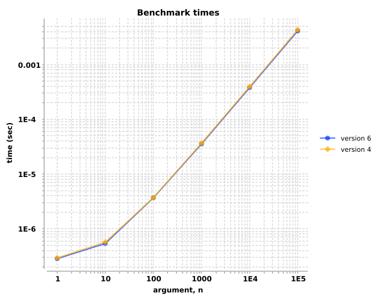
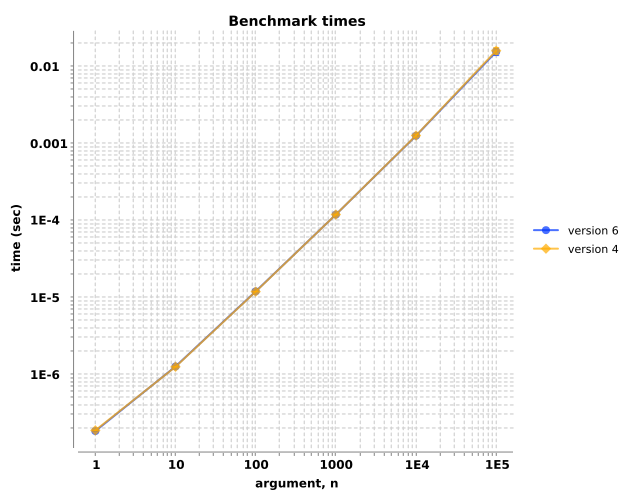
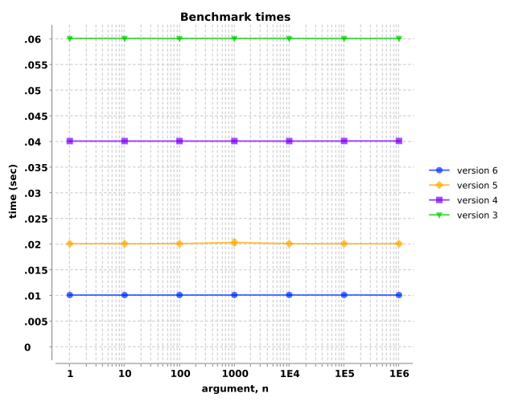
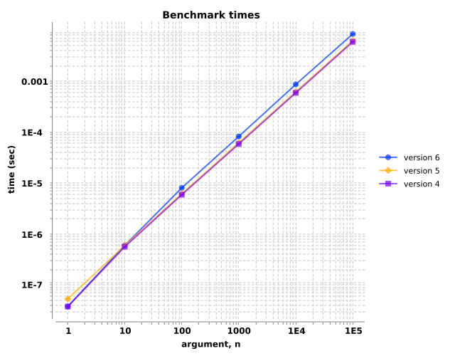

custom `conj`
In addition to the preamble, we may add text comments to each group, in this case, the group called 'custom `conj`', which Fastester uses
for the section heading. Group comments are sourced from the :comments key of the options.
This group happens to involve only a single benchmark, but later groups will contain more than one. The version 5 conj function was
implemented as usual, while the version 6 implementation uses transients for improved
performance.
Interestingly, the transient conjoin implementation is always slower, for vectors spanning one to ten million elements. This represents a performance regression. We should consider leaving the original implementation as-is, and make an entirely new function for situations where the transient implementation is actually faster.
One final note: Fastester displays error bars indicating the standard deviation of the sampled measurements. This gives a sense of how tightly the data clusters. When the the error bars go negative and the y-axis is logarithmic, Fastester suppresses that particular error bar because it can not be displayed. A note highlights this occurance below the chart, and the datum in the details table is called out.
Linear y-axes always display all error bars.
(fn [n] (my-conj (seq-of-n-rand-ints n) :tail-value))
![Benchmark measurements for expression `(fn [n] (my-conj (seq-of-n-rand-ints n) :tail-value))`, time versus 'n' arguments, comparing different versions.](img/group-0-fexpr-0.svg)
| arg, n | ||||||||
|---|---|---|---|---|---|---|---|---|
| version | 1 | 10 | 100 | 1000 | 10000 | 100000 | 1000000 | 10000000 |
| 6 | 4.0e-07±9.5e-09 | 4.4e-07±1.2e-08 | 4.8e-07±2.1e-09 | 5.6e-07±8.7e-09 | 5.9e-07±8.1e-09 | 9.3e-07±5.6e-08 | 9.7e-07±1.6e-08 | 1.1e-06±3.6e-08 |
| 5 | 1.9e-07±1.4e-09 | 2.3e-07±4.3e-09 | 2.8e-07±1.2e-08 | 3.2e-07±4.9e-09 | 3.5e-07±1.5e-09 | 7.6e-07±7.3e-09 | 8.0e-07±5.7e-09 | 9.6e-07±8.4e-09 |
mapping stuff
This benchmark group demonstrates that the relative comparisons do not necessarily have be be sequential. In this case, we skipped version 5.
Note the logarithmic scales on both the x- and y-axes. Also note the doall to force realization of the sequence.
This benchmark group does not involve any actual implementation change, so we don't see any significant performance difference between versions 4 and 6.
Another thing to note is that this group contains two benchmarks, the first incrementing numbers, the second upper-casing strings. It's intended to
demonstrate map's performance spanning six orders of magnitude, with mapping functions handling two differernt data types.
(fn [n] (doall (map inc (range-of-length-n n))))
| arg, n | ||||||
|---|---|---|---|---|---|---|
| version | 1 | 10 | 100 | 1000 | 10000 | 100000 |
| 6 | 5.3e-07±2.8e-08 | 1.2e-06±1.4e-08 | 7.1e-06±6.8e-08 | 6.8e-05±8.6e-07 | 6.7e-04±1.5e-05 | 7.1e-03±3.9e-04 |
| 4 | 4.5e-07±4.7e-09 | 1.1e-06±6.1e-09 | 7.0e-06±7.0e-08 | 6.7e-05±1.5e-06 | 6.8e-04±1.6e-05 | 7.3e-03±7.8e-04 |
(fn [n] (doall (map str/upper-case (abc-cycle-of-length-n n))))
| arg, n | ||||||
|---|---|---|---|---|---|---|
| version | 1 | 10 | 100 | 1000 | 10000 | 100000 |
| 6 | 3.6e-07±2.2e-09 | 2.3e-06±1.2e-07 | 2.3e-05±2.9e-06 | 2.0e-04±2.5e-06 | 2.0e-03±6.5e-05 | 2.5e-02±3.7e-03 |
| 4 | 3.7e-07±1.0e-08 | 2.2e-06±3.4e-08 | 2.0e-05±1.6e-07 | 2.0e-04±2.2e-06 | 2.0e-03±5.8e-05 | 2.4e-02±4.1e-03 |
plus, vary number of digits in args
The three benchmarks in this group simulate performance enchancements to the addition function. To simulate this,
delayed-+ is merely that: clojure.core/+ with an intentional delay that decreases from 60 milliseconds in
version 3 to 10 milliseconds in version 6.
The group contains benchmarks measuring the addition of one, two, and three operands. For each of those three cases, we measure the evaluation times of integers of different sizes.
We don't expect addition to be dependent on the size of the operands, and in fact that's what we see, particularly since the intentional delay utterly swamps any other factor that might cause a measurable difference.
(fn [n] (delayed-+ n n n))
![Benchmark measurements for expression `(fn [n] (delayed-+ n n n))`, time versus 'n' arguments, comparing different versions.](img/group-2-fexpr-0.svg)
| arg, n | |||||||
|---|---|---|---|---|---|---|---|
| version | 1 | 10 | 100 | 1000 | 10000 | 100000 | 1000000 |
| 6 | 1.0e-02±1.7e-06 | 1.0e-02±3.7e-06 | 1.0e-02±5.6e-06 | 1.0e-02±7.3e-06 | 1.0e-02±6.1e-06 | 1.0e-02±9.3e-06 | 1.0e-02±5.0e-06 |
| 5 | 2.0e-02±3.1e-06 | 2.0e-02±4.2e-06 | 2.0e-02±7.5e-06 | 2.0e-02±1.8e-06 | 2.0e-02±4.5e-06 | 2.0e-02±9.0e-06 | 2.0e-02±7.4e-06 |
| 4 | 4.0e-02±1.5e-06 | 4.0e-02±4.4e-06 | 4.0e-02±2.5e-05 | 4.0e-02±9.3e-06 | 4.0e-02±1.1e-05 | 4.0e-02±1.5e-06 | 4.0e-02±1.5e-06 |
| 3 | 6.0e-02±4.7e-06 | 6.0e-02±9.3e-06 | 6.0e-02±9.2e-06 | 6.0e-02±7.6e-06 | 6.0e-02±1.4e-05 | 6.0e-02±1.1e-05 | 6.0e-02±4.1e-06 |
(fn [n] (delayed-+ n n))
| arg, n | |||||||
|---|---|---|---|---|---|---|---|
| version | 1 | 10 | 100 | 1000 | 10000 | 100000 | 1000000 |
| 6 | 1.0e-02±7.2e-06 | 1.0e-02±2.2e-06 | 1.0e-02±3.1e-06 | 1.0e-02±3.0e-06 | 1.0e-02±4.5e-06 | 1.0e-02±6.4e-06 | 1.0e-02±7.1e-06 |
| 5 | 2.0e-02±1.1e-05 | 2.0e-02±4.2e-06 | 2.0e-02±1.1e-05 | 2.0e-02±2.5e-06 | 2.0e-02±7.4e-06 | 2.0e-02±5.9e-06 | 2.0e-02±5.8e-06 |
| 4 | 4.0e-02±5.9e-06 | 4.0e-02±5.0e-06 | 4.0e-02±8.3e-06 | 4.0e-02±6.5e-06 | 4.0e-02±5.4e-06 | 4.0e-02±1.1e-05 | 4.0e-02±8.6e-06 |
| 3 | 6.0e-02±7.1e-06 | 6.0e-02±5.9e-06 | 6.0e-02±7.7e-06 | 6.0e-02±1.1e-05 | 6.0e-02±1.4e-05 | 6.0e-02±8.2e-06 | 6.0e-02±1.6e-05 |
(fn [n] (delayed-+ n))
| arg, n | |||||||
|---|---|---|---|---|---|---|---|
| version | 1 | 10 | 100 | 1000 | 10000 | 100000 | 1000000 |
| 6 | 1.0e-02±3.5e-06 | 1.0e-02±2.5e-06 | 1.0e-02±6.0e-06 | 1.0e-02±2.3e-06 | 1.0e-02±3.9e-06 | 1.0e-02±4.5e-06 | 1.0e-02±8.1e-06 |
| 5 | 2.0e-02±1.3e-05 | 2.0e-02±2.1e-05 | 2.0e-02±3.3e-06 | 2.0e-02±8.9e-06 | 2.0e-02±7.7e-06 | 2.0e-02±1.4e-05 | 2.0e-02±1.2e-05 |
| 4 | 4.0e-02±1.3e-06 | 4.0e-02±1.3e-05 | 4.0e-02±2.6e-05 | 4.0e-02±7.0e-06 | 4.0e-02±1.0e-06 | 4.0e-02±2.0e-05 | 4.0e-02±1.5e-05 |
| 3 | 6.0e-02±8.9e-06 | 6.0e-02±5.7e-06 | 6.0e-02±1.4e-05 | 6.0e-02±1.3e-05 | 6.0e-02±1.4e-05 | 6.0e-02±1.2e-05 | 6.0e-02±9.8e-06 |
plus, vary number of operands
Because the sequences grow from one element to one-hundred thousand elements long, the evaluation times of this group's single benchmark increase. We didn't change the implementation from versions 4 through 6 for this demonstration, so all three curves are stacked atop one another.
(fn [n] (apply + (seq-of-n-repeats n)))
| arg, n | ||||||
|---|---|---|---|---|---|---|
| version | 1 | 10 | 100 | 1000 | 10000 | 100000 |
| 6 | 1.5e-07±2.1e-09 | 1.1e-06±9.6e-09 | 9.8e-06±4.2e-08 | 9.7e-05±4.2e-07 | 9.7e-04±1.7e-06 | 9.8e-03±6.8e-05 |
| 5 | 1.5e-07±1.7e-09 | 1.1e-06±1.6e-08 | 1.0e-05±7.7e-08 | 1.0e-04±1.4e-06 | 9.9e-04±1.1e-05 | 9.9e-03±5.8e-05 |
| 4 | 1.4e-07±1.5e-09 | 1.1e-06±3.3e-09 | 1.0e-05±4.4e-08 | 1.0e-04±1.5e-06 | 9.9e-04±4.3e-06 | 9.9e-03±3.1e-05 |